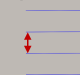

<div id="finishingStepdown"><p>Valeur de chaque pas en Z pour les passes de finition.</p>
<table class="tipTable" cellspacing="10">
<tr>
<td><center></center></td>
</tr><tr>
<td><center><p><b>Profondeur de passe de finition</b></p></center></td>
</tr></table>
</div>